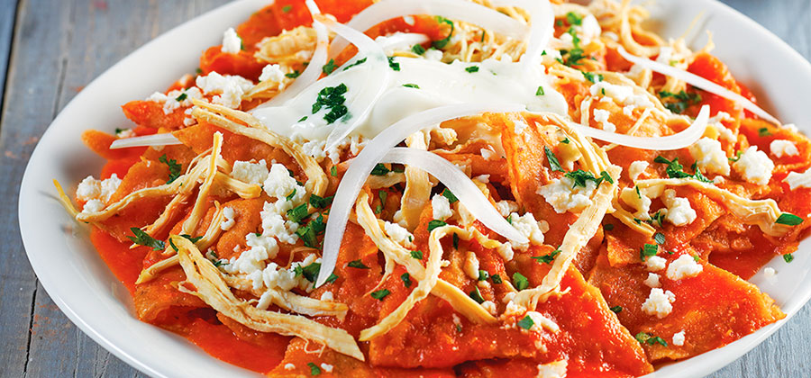

Chilaquiles are a quintessential Mexican breakfast dish designed to breathe life into leftover corn tortillas. Crisp, fried tortilla triangles are lightly simmered in a vibrant, savory red tomato and chili sauce until they reach a perfect balance of tender yet structurally sound. Typically crowned with shredded chicken, a drizzle of Mexican crema, crumbled cotija cheese, and raw onion rings, they offer a comforting combination of smoky spice, rich corn flavor, and cool, tangy toppings.